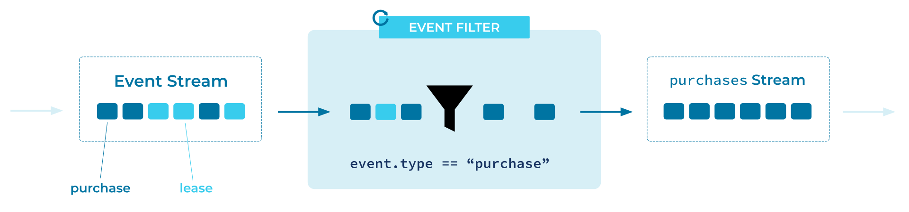

Event Filter
Event Processing Applications may need to operate over a subset of Events in an Event Stream.
Problem
How can an application select only the relevant events (or discard uninteresting events) from an Event Stream?
Solution

Implementation
As an example, the streaming database ksqlDB lets us create a filtered Event Stream using familiar SQL syntax:
CREATE STREAM payments_only WITH (kafka_topic = 'transactions-topic') AS
SELECT *
FROM all_transactions
WHERE type = 'purchase';
The Kafka Streams client library of Apache Kafka® provides a filter operator in its DSL. This operator filters out events that do not match a given predicate:
builder
.stream("transactions-topic")
.filter((key, transaction) -> transaction.type == "purchase")
.to("payments-topic");
References
- This pattern is derived from Message Filter in Enterprise Integration Patterns, by Gregor Hohpe and Bobby Woolf.
- See the tutorial How to filter a stream of events for detailed examples of filtering event streams.